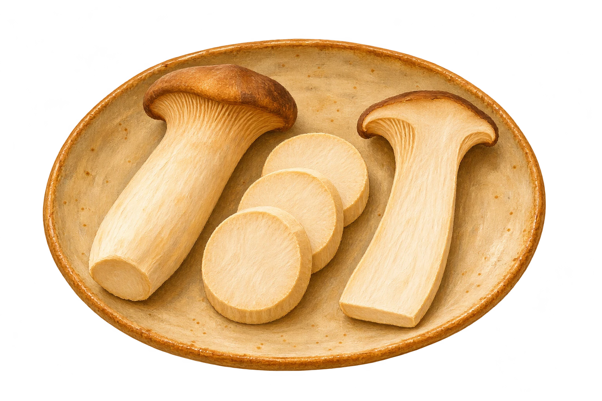

El corte, el contacto con la sartén y la presencia de líquido cambian el resultado. Estas preparaciones permiten explorar esas diferencias.

Medallón o lámina
Un corte transversal del pie de eryngii da medallones; un corte longitudinal conserva la silueta. En ambos, el contacto con la plancha permite dorar las caras mientras se cocina el interior.
La melena de león se puede separar en hebras o trabajar en láminas. Desmenuzada ofrece más bordes para dorar; en piezas conserva un centro de mayor espesor.
Distribuir las setas con espacio permite mantener el contacto con la superficie caliente. Si el líquido se acumula, deja que se evapore antes de buscar el dorado.